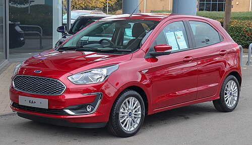

O Ka é um carro pequeno fabricado pela Ford Motor Company de 1996 a 2016 como um carro de cidade e de 2016 a 2021 como um carro subcompacto. Entrou na segunda geração em 2008, produzido pela Fiat em Tychy, Poland.[1][2][3]Uma terceira geração foi introduzida em 2016. No Brasil era um subcompacto na primeira geração, na Europa oferecia também versões esportivas (denominado SportKa) e conversíveis (denominado StreetKa). Na segunda geração, passou a ser um compacto. A terceira geração foi produzida como um hatchback de cinco portas e como um sedan de quatro portas. Inicialmente estava disponível apenas no Brasil e mais tarde foi introduzido na Índia, Itália,[4] México, Espanha, África do Sul (onde foi comercializado como o Ford Figo), Argentina e Polônia. As vendas europeias terminaram em 2020 e, em 2021, foi retirada de produção no Brasil.